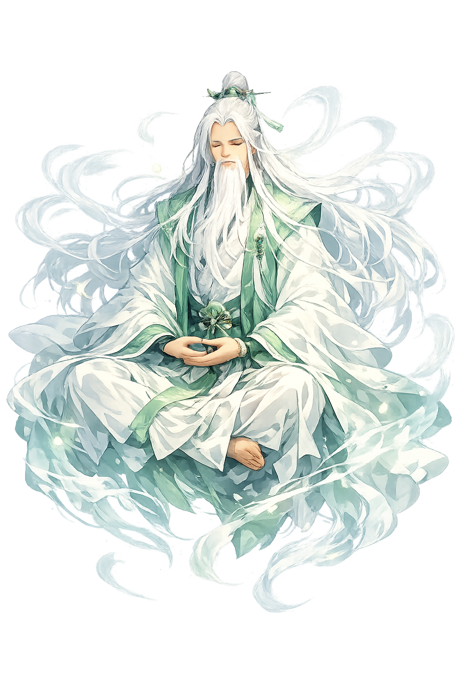

Unicode restoration and ASCII comparison
仙
The name in its original Chinese form. Xiān (仙) is attested in the source tradition — “Immortal”. Its macron-length vowels carry the full phonetic and orthographic weight of the source tradition.
xian
Reduced to plain xian, the name loses everything that made it specific: macron-length vowels. What remains is an ASCII string that machines can parse but that no longer speaks with its original voice.
Xiān
The Unicode restoration recovers what ASCII flattened. Xiān restores macron-length vowels, returning the name to its original written dignity. The domain encodes to Punycode, but the browser displays the truth.
Xiān.com → xn--xin-2oa.com
The non-ASCII characters in Xiān are encoded while the ASCII remains visible. To the DNS, it is Punycode. To humanity, it is Xiān.
How Xiān is preserved in writing
A bespoke provenance study for Xiān is being prepared by the PUNICODEX scholarly team.
Contribute scholarly provenance →How Xiān was spoken
Transcendence, Daoist Practice, and Celestial Freedom
Xiān is the Chinese immortal: a human being who has refined body and spirit until death no longer applies. Unlike the gods of popular religion, who receive offerings and grant petitions, the xiān has escaped the bureaucracy of heaven and earth. He or she dwells in mountains, rides clouds or cranes, and appears unpredictably to those who have cultivated the Dao.
The path to becoming xiān is not faith but practice: meditation, breath control, diet, alchemy, and moral discipline. Immortality is an achievement, not a gift.
The xiān has overcome ageing and death through disciplined transformation of the body.
Immortals withdraw to peaks and grottoes where the qi is pure and the world is far.
Neidan refines the three treasures — jīng, qì, shén — into an immortal embryo.
Unlike gods bound by celestial office, the xiān wanders freely between realms.
Stories of Xiān
Xiān mythology is a vast gallery of individual adepts, each with a distinctive method of transcendence. They are less a pantheon than a community of perfected beings.
The most famous xiān are the Eight Immortals, each representing a different social type and a different path to transcendence. Zhōnglí Quán was a general; Lǚ Dòngbīn a scholar; Hé Xiāngū a woman who nourished her spirit; Lán Cǎihé a gender-ambiguous beggar; and so on. Their collective journeys show that immortality is open to anyone who cultivates the Dao, regardless of birth.
Every three thousand years, the peaches of immortality ripen in the garden of Xīwángmǔ, the Queen Mother of the West. The xiān gather to feast and renew their transcendence. The myth links immortality to cosmic time: it is not a single event but a continual nourishment by celestial cycles.
Some xiān are said to achieve transcendence through shījié, 'liberation from the corpse.' The adept appears to die and leave a body behind — sometimes a sword or a bamboo staff transformed to look like a corpse — while the true person departs as a xiān. The motif resolves the paradox of physical immortality: the body that is left is not the body that ascends.
Xiān is the promise that the human body is not a prison. Unlike religions that split soul from flesh, Daoist immortality aims to refine the body until it becomes light, durable, and free. The xiān does not escape the world; the world loses its grip.
Enter Extended Lore